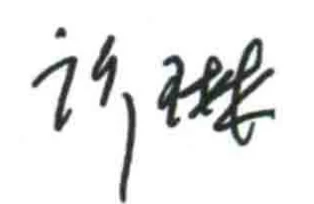

序Предисловие2009年全新改版后的HSK考试，由过去以考核汉语知识水平为主，转为重点评价汉语学习者运用汉语进行交际的能力，不仅在考试理念上有了重大突破，而且很好地适应了各国汉语教学的实际，因此受到了普遍欢迎，其评价结果被广泛应用于汉语能力的认定和作为升学、就业的重要依据。После полного обновления в 2009 году экзамен HSK перешёл от проверки знаний китайского языка к оценке способности общаться на нём. Это стало значительным изменением экзаменационной концепции и соответствовало потребностям преподавания китайского языка в разных странах. Экзамен получил широкое признание; его результаты используются для подтверждения владения языком и служат важным основанием при поступлении на учёбу и трудоустройстве.为进一步提升孔子学院汉语教学的水平和品牌，有必要建立一套循序渐进、简便易学、实用高效的汉语教材体系和课程体系。此次经国家汉办授权，由汉考国际（CTI）和北京语言大学出版社联合开发的《HSK标准教程》，将HSK真题作为基本素材，以自然幽默的风格、亲切熟悉的话题、科学严谨的课程设计，实现了与HSK考试内容、形式及等级水平的全方位对接，是一套充分体现考教结合、以考促学、以考促教理念的适用教材。很高兴把《HSK标准教程》推荐给各国孔子学院，相信也会对其他汉语教学机构和广大汉语学习者有所裨益。Для дальнейшего повышения качества и укрепления авторитета преподавания в Институтах Конфуция необходима последовательная, доступная, практичная и эффективная система учебников и курсов. «Стандартный курс HSK», разработанный по поручению Ханьбань организацией Chinese Testing International (CTI) и издательством BLCU, опирается на реальные экзаменационные задания. Естественный юмористический стиль, знакомые темы и строгая структура курса соответствуют содержанию, формату и уровням HSK. Курс объединяет обучение и проверку, используя экзамен для развития учения и преподавания. С удовольствием рекомендую его Институтам Конфуция во всём мире и надеюсь, что он будет полезен другим учебным организациям и изучающим китайский язык.感谢编写组同仁们勇于开拓的工作！Благодарю авторский коллектив за смелую новаторскую работу!

许琳Сюй Линь孔子学院总部总干事Генеральный директор штаб-квартиры Институтов Конфуция中国国家汉办 主 任Руководитель Ханьбань, Китай